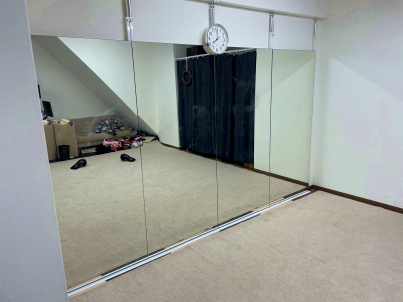
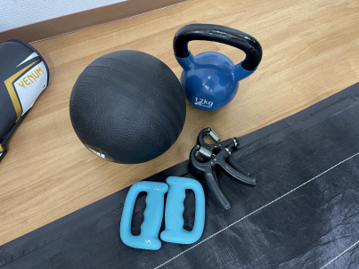
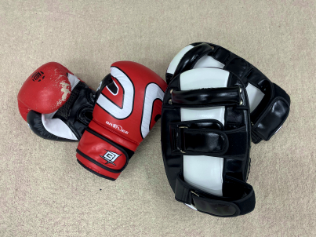
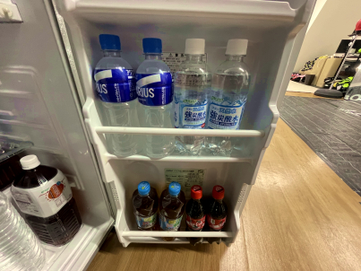
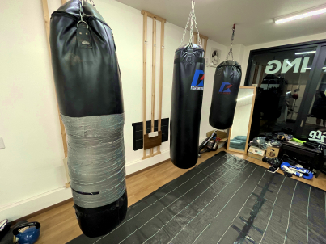
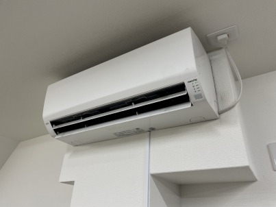

La Amartaの特徴
気合や根性ではなく、理屈で教えます

La Amartaでは、「とにかく頑張れ」「気合で乗り切れ」といった根性論だけの指導は行っていません。
なぜその動きが必要なのか、どこを意識すれば上手くいくのかを、できるだけ分かりやすく説明しながら進めていきます。
理由が分かると、納得して練習できるので、無理に追い込まなくても自然と成長していけます。初心者の方でも理解しやすいよう、専門用語もかみ砕いてお伝えしますのでご安心ください。
未経験からでも問題なし

La Amartaでは、まったくの初心者の方でも無理なく始めていただけるよう、基礎から丁寧にサポートしています。
サンドバッグやミット練習に加えて、希望される方には“軽いマススパー”にも早い段階からチャレンジしていただけます。
といっても、本格的に打ち合うものではなく、当てない・力を抜く・安全第一の動きの確認が中心。トレーナーが常に見守りながら行うので、「怖い」「痛い」といった不安は必要ありません。
実際の動きを体験することで、上達のスピードや理解度はぐっと変わります。 楽しみながら、自然と強く・上手くなっていきましょう。
他ジム生やリターン組に人気

La Amartaは、尼崎でキックボクシングの技術を学びたい方に向けた指導型の塾です。初心者の方はもちろん、他のジムに通っている練習生が「技術を磨く場所」として利用することも少なくありません。
また、以前格闘技をしていて久しぶりに再開する“リターン組”の方も多く、それぞれの経験や目的に合わせて練習できる環境になっています。
初めての方や女性お一人でも安心です

La Amartaには、女性お一人で通われている方も多くいらっしゃいます。トレーニング中は、適切な距離感と配慮を大切にしながら指導を行い、無理な接触や不快に感じる行為は一切ありません。
ジム内では、誰もが安心してトレーニングに集中できるよう、清潔な環境づくりと、丁寧で誠実な対応を心がけています。運動が初めての方や不安をお持ちの方でも、安心して通っていただける場所を目指しています。
自分のペースで、無理なく続けられます

La Amartaでは、「今日はしんどいな…」という日があっても大丈夫。
トレーニングの途中で疲れたら、ソファで休んだり、座ってひと息ついたりしていただいて構いません。 寝そべっても、スマホを見ながらゆっくり過ごしていただいてもOKです。ジム内は冷暖房を完備しております。
ジムの出入りも自由なので、気負わず通っていただけます。無理に追い込むのではなく、その日の体調や気分に合わせて、長く楽しく続けられる場所でありたいと思っています。
フラットで、誰でも輪に入りやすい雰囲気です

La Amartaでは、上下関係を強くつけたり、特定のグループだけが固まるような雰囲気がありません。自然とみんなが声をかけ合い、新しく来た方でもすぐに馴染める空気があります。
対人練習も「仲間同士で助け合いながら成長する」という考え方を大切にしているので、誰かの輪に入らないと練習できない、ということはありません。
フラットで、気楽に通えるジムを目指しています。